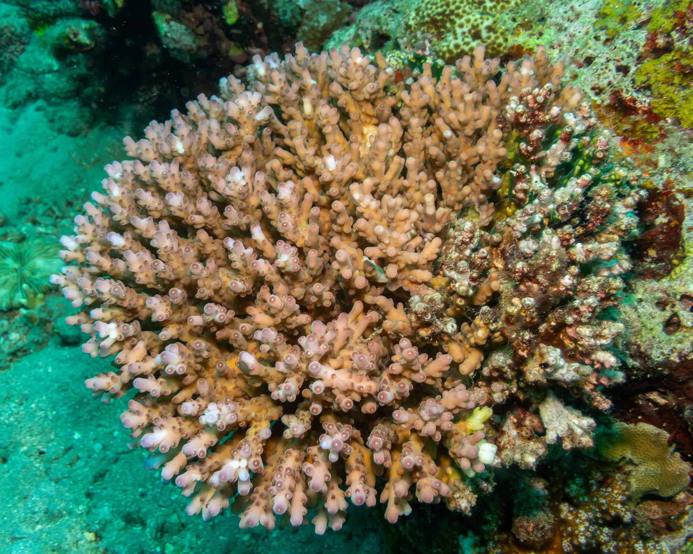
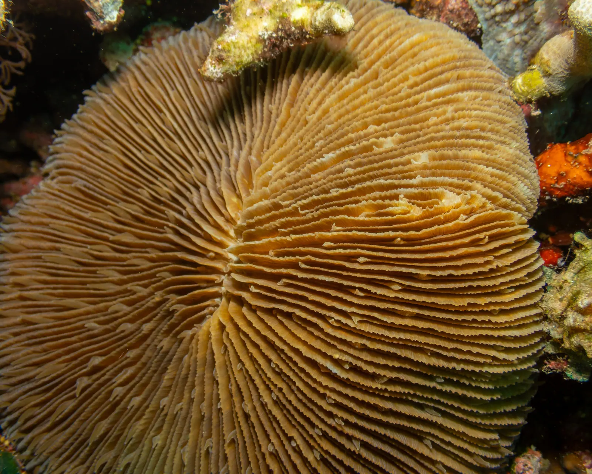
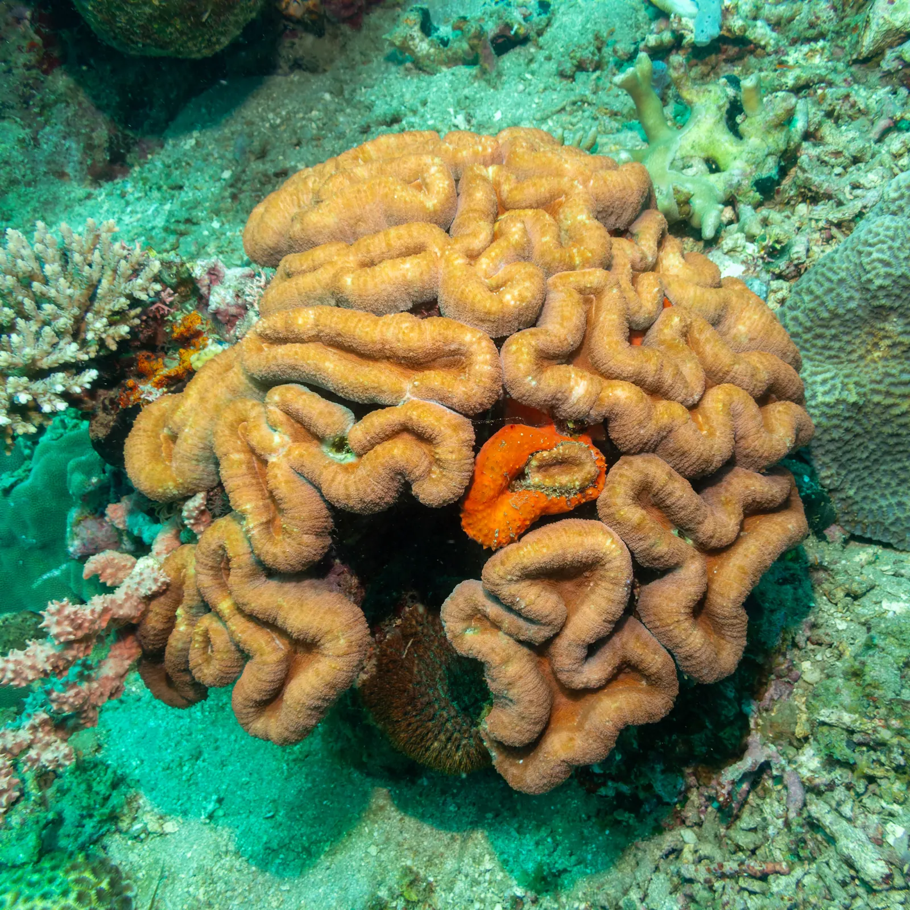
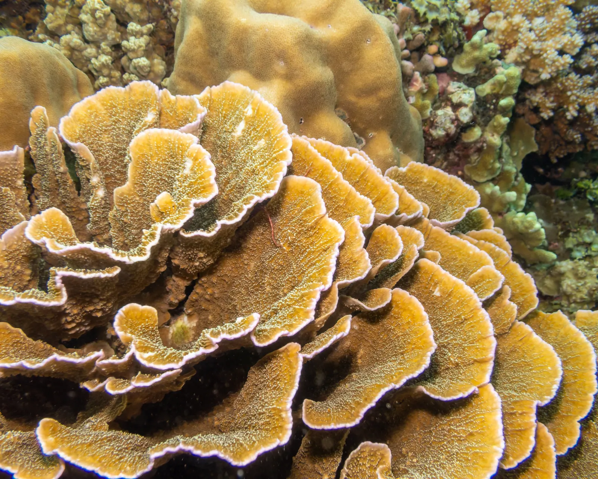
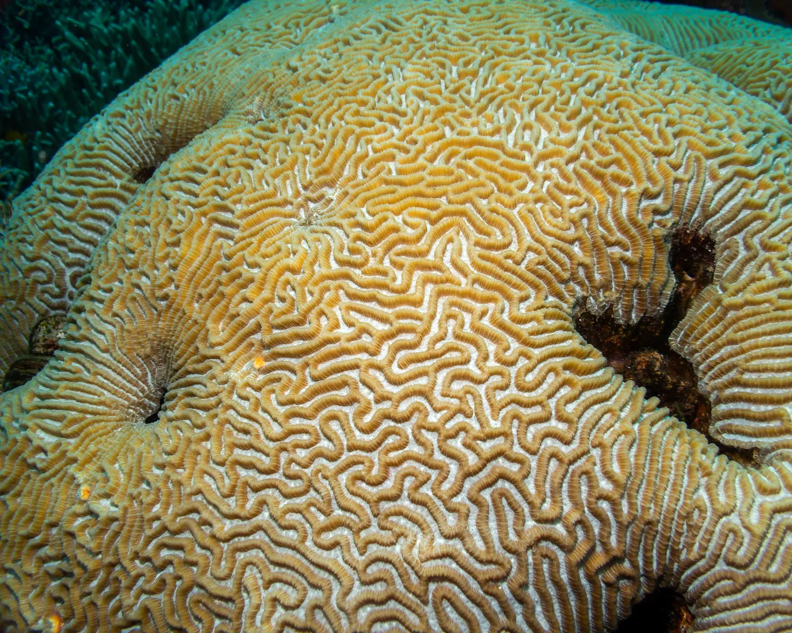
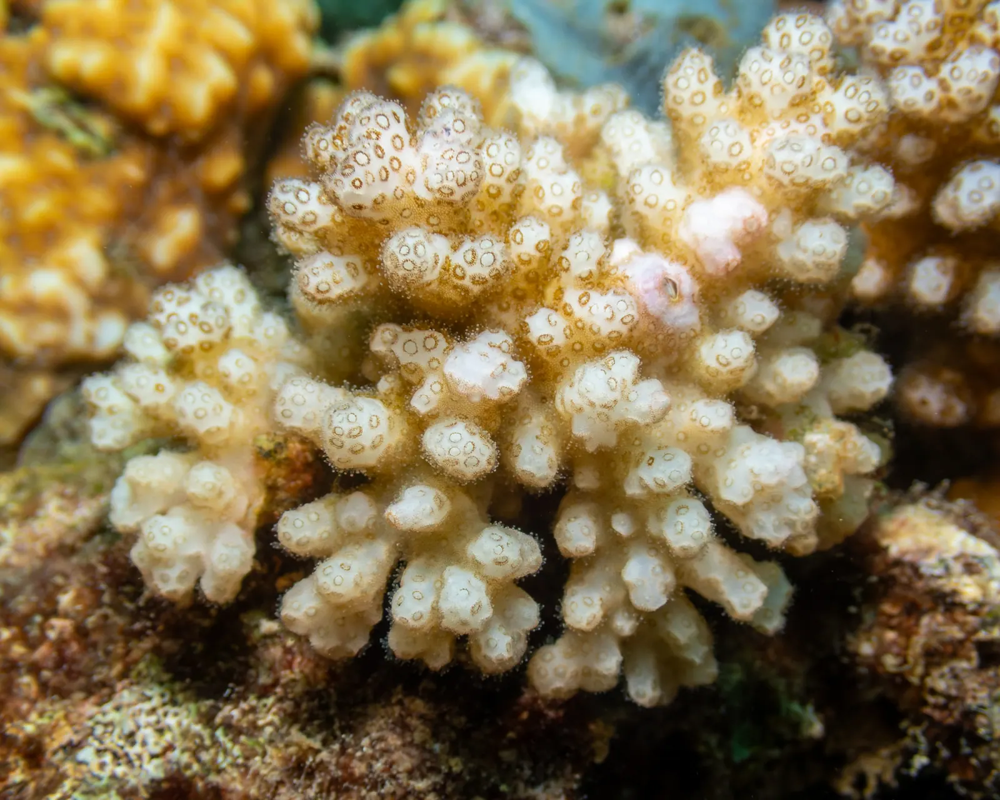

IMR Coral ID
Learn the coral genera of the IMR slate
Photo quiz · look-alike duels · genus sheets · Coral Finder





Learn the coral genera of the IMR slate
Photo quiz · look-alike duels · genus sheets · Coral Finder